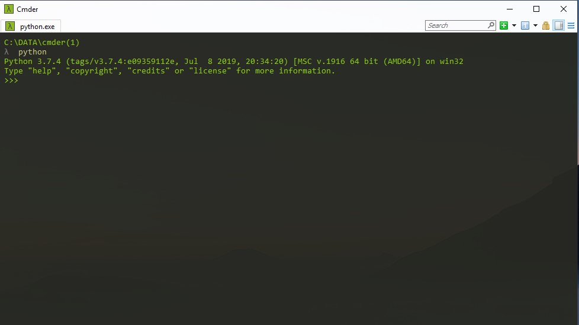

001. Pekernalan Dengan Tensorflow
2019-11-22
 Install Python 3.7.4
Python Python 3.7.4 (tags/v3.7.4:e09359112e, Jul 8 2019, 20:34:20) [MSC v.1916 64 bit (AMD64)] on win32 Type "help", "copyright", "credits" or "license" for more information. >>>
Pastikan Sudah terinstall virual environtment karena akan digunakan dua versi tensorflow
versi 2.0 dan versi 1.5.1. Versi 2 digunakan untuk proses pra-training sedangkan versi 1.5.1 digunakan untuk proses training.
Install paket yang dibutuhkan
pip install --upgrade tensorflow==1.15 pip install --upgrade tensorflow==2.0 pip install tensorboard pip install matplotlib pip install lxml pip install Cython pip install pillow pip install jupyter pip install pandas pip install opencv-python
jika terdapat error ditensorflow 2 bisa mencoba perbaiki data di baris ini
AttributeError: module 'tensorflow' has no attribute 'GraphDef' import tensorflow as tf menjadi import tensorflow.compat.v1 as tf AttributeError: module 'tensorflow' has no attribute 'gfile' utils\label_map_util.py with tf.io.gfile.GFile(PATH_TO_CKPT, 'rb') as fid: #with tf.io.gfile.GFile(PATH_TO_CKPT, 'rb') as fid: tf.compat.v1.GraphDef() # -> instead of tf.GraphDef() tf.compat.v2.io.gfile.GFile() # -> instead of tf.gfile.GFile()
Download full TensorFlow object detection repository di alamat ini
https://github.com/tensorflow/models/releases/tag/v2.0
untuk melihat seluruh releasenya ada di link ini
https://github.com/tensorflow/models/releases
untuk melihat default reponya ada dilink ini
https://github.com/tensorflow/models
Ujicoba Object Detection Tensorflow di Jupyter Notebook
https://www.youtube.com/watch?v=7hdo7Y30Yiw
pindah ke directori kerja
jika menggunakan shell D: ; cd 'D:\DATA_APLIKASI\CODING\PYTHON\python3_01\007. working_area' jika menggunakan CMD D: & cd D:\DATA_APLIKASI\CODING\PYTHON\python3_01\007. working_area
membuat virtualenv
python -m venv c:\path\to\myenv virtualenv tensorflow_1.15 virtualenv tensorflow_2.0

Gambar Buat Virtualenv
pindah ke direkstori tensorflow_1.15 dan aktifkan projectnya
cd tensorflow_1.15 & cd scripts & activate.bat cd tensorflow_2.0 & cd scripts & activate.bat

Gambar masuk Virtualenv 1

Gambar masuk Virtualenv 2
Extract tensorflow yang sudah didownload di folder tensorflow_2.0 dan di tensorflow_1.15 lalu rename namanya menjadi models

Gambar Models
Masuk kedirektori objectdetection
cd models\research\object_detection mkdir data_master & mkdir data_file & mkdir data_uji & cd data_master mkdir images & mkdir inference_graph & mkdir training cd images & mkdir train & mkdir test
aktifkan pythonpath di tensorflow 1.15
Configure PYTHONPATH environment variable
PYTHONPATH variable must be created that points to the directories
\models
\models\research
\models\research\slim
atau
set PYTHONPATH=D:\DATA_APLIKASI\CODING\PYTHON\python3_01\007. working_area\tensorflow_1.15\models;D:\DATA_APLIKASI\CODING\PYTHON\python3_01\007. working_area\tensorflow_1.15\models\research;D:\DATA_APLIKASI\CODING\PYTHON\python3_01\007. working_area\tensorflow_1.15\modelss\research\slim echo %PYTHONPATH% set PATH=%PATH%;PYTHONPATH echo %PATH%
pindah ke directory models/research lalu complie protobufs
protoc --python_out=. .\object_detection\protos\anchor_generator.proto .\object_detection\protos\argmax_matcher.proto .\object_detection\protos\bipartite_matcher.proto .\object_detection\protos\box_coder.proto .\object_detection\protos\box_predictor.proto .\object_detection\protos\eval.proto .\object_detection\protos\faster_rcnn.proto .\object_detection\protos\faster_rcnn_box_coder.proto .\object_detection\protos\grid_anchor_generator.proto .\object_detection\protos\hyperparams.proto .\object_detection\protos\image_resizer.proto .\object_detection\protos\input_reader.proto .\object_detection\protos\losses.proto .\object_detection\protos\matcher.proto .\object_detection\protos\mean_stddev_box_coder.proto .\object_detection\protos\model.proto .\object_detection\protos\optimizer.proto .\object_detection\protos\pipeline.proto .\object_detection\protos\post_processing.proto .\object_detection\protos\preprocessor.proto .\object_detection\protos\region_similarity_calculator.proto .\object_detection\protos\square_box_coder.proto .\object_detection\protos\ssd.proto .\object_detection\protos\ssd_anchor_generator.proto .\object_detection\protos\string_int_label_map.proto .\object_detection\protos\train.proto .\object_detection\protos\keypoint_box_coder.proto .\object_detection\protos\multiscale_anchor_generator.proto .\object_detection\protos\graph_rewriter.proto
protoc object_detection/protos/*.proto --python_out=.
masih di direktori directory models/research jalankan
python setup.py build & python setup.py install
Dijalankan di Tensorflow 2.0
copy file object_detection_tutorial.ipynb di folder object detection ke folder research
cd models\research\object_detection jupyter notebook object_detection_tutorial.ipynb
Pembuatan Dataset dengan 3 Class / 3 Item
https://www.youtube.com/watch?v=O4NxLezwDNo
pisahkan data di folder data_master / images menjadi dua folder train dan test (perbandingan 7:3) 7 untuk training dan 3 untuk test
data images dan xml harus satu folder terlihat seperti gambar berikut,

Gambar data folder master
lalu

Gambar 2. data folder master
lalu

Gambar 3. data folder master
pada direkstori models\research\object_detection jalankan
# python data_file/zzz_xml_to_csv.py #
edit File data_file/zzz_generate_tfrecord.py lalu sesuaikan jumlah class yang digunakan contoh nya sebagai berikut
# TO-DO replace this with label map
def class_text_to_int(row_label):
if row_label == 'namanya_1':
return 1
elif row_label == 'namanya_2':
return 2
elif row_label == 'namanya_3':
return 3
elif row_label == 'namanya_4':
return 4
else:
return 0
pada direkstori models\research\object_detection Lalu jalankan perintah
# python data_file/zzz_generate_tfrecord.py --csv_input=data_master\images\train_labels.csv --image_dir=data_master\images\train --output_path=data_master\train.record python data_file/zzz_generate_tfrecord.py --csv_input=data_master\images\test_labels.csv --image_dir=data_master\images\test --output_path=data_master\test.record #
Dijalankan di Tensorflow 1.5
Download faster_rcnn_inception_v2_coco di alamat berikut
https://github.com/tensorflow/models/blob/master/research/object_detection/g3doc/detection_model_zoo.md
extract lalu Copy faster_rcnn_inception_v2_coco_2018_01_28 di directory models\research\object_detection
Konfigurasi Pendukung Training
Pada folder data copy file pet_label_map.pbtxt kemudian rename menjadi labelmap.pbtxt
sesuaikan jumlah class data yang akan digunakan. Contoh penulisan class adalah sebagai berikut.
item {
id: 1
name: 'namanya_1'
}
item {
id: 2
name: 'namanya_2'
}
item {
id: 3
name: 'namanya_3'
}
item {
id: 4
name: 'namanya_4'
}
letakan file labelmap.pbtxt di folder data_master/training
copy faster_rcnn_inception_v2_pets.config pada direktori models\research\object_detection\samples\configs lalu paste di direktori data_master/training
1. Dibagian model ganti jumalah num_classes: 4 dengan seberapa banyak data class yang anda gunakan
2. fine_tune_checkpoint: "faster_rcnn_inception_v2_coco_2018_01_28/model.ckpt" sesuaikan dengan folder yang digunakan
3. pada bagian train_input_reader: ubah folder input_path: menjadi
input_path: "data_master/train.record"
label_map_path: "data_master/training/labelmap.pbtxt"
4. Pada bagian eval_config sesuaikan jumlah data sample yang digunakan dalam proses training
num_examples: 20
5. Pada bagian eval_input_reader ubah
input_path: "data_master/test.record"
label_map_path: "data_master/training/labelmap.pbtxt"
# python data_file/zzz_train.py --logtostderr --train_dir=data_master/training/ --pipeline_config_path=data_master/training/faster_rcnn_inception_v2_pets.config #
pada saat training jika error module not found nets dan deployment solusinya copy folder net dan deployment di folder model/research/slim ke folder \tensorflow_1.15\Lib\site-packages lalu jalankan ulang perintah trainingnya
Lalu Exprot Hasil Training angka xxx diganti dengan data training yang tersimpan
# python export_inference_graph.py --input_type image_tensor --pipeline_config_path data_master/training/faster_rcnn_inception_v2_pets.config --trained_checkpoint_prefix data_master/training/model.ckpt-XXXX --output_directory data_master/inference_graph #
Hasil Training dan Persiapan Uji Coba Deteksi Object
https://www.youtube.com/watch?v=O4NxLezwDNo
melihat data hasil traning models\research\object_detection
# tensorboard --logdir=data_master\training #
jalankan uji coba deteksi gambar
jika error module utils not found solusinya copy folder utils di object_detection/utils ke folder lib/site-packages
Melihat Akurasi Object Detection dan Ujicoba Akhir Hasil Training
https://www.youtube.com/watch?v=O4NxLezwDNo